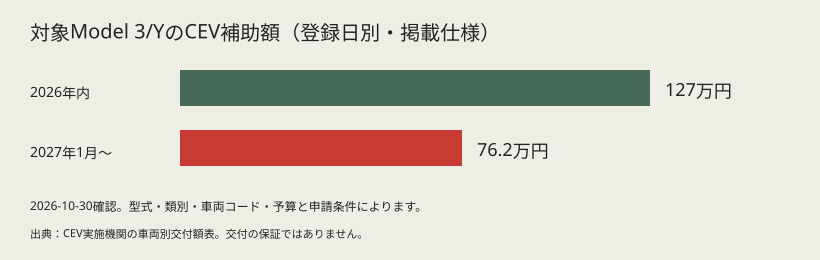

HW3 + HW4 · OWNER’S GUIDE
Teslaの補助金はいつまで？ 127万円・76.2万円と、二つの期限。
CEV公式表の登録日別金額と、予算終了見込みを整理。自治体分は住所と条件ごとに別確認する。

Darin Caggiano / Wikimedia Commons · CC BY-SA 4.0 · 縮小版。表示枠に合わせたトリミングあり。
今と2027年では金額が違う
10月30日に確認したCEV車両表では、対象のModel 3/Yの掲載仕様は2026年12月31日までの登録分127万円、2027年1月1日以降は76.2万円です。差は50.8万円。車名だけでなく型式・類別・車両コード・備考と登録日を照合してください。
12月の終了見込みと2月の最終期限
10月9日の公式告知では、予算に伴う受付終了見込みは2026年12月上旬〜下旬。別の公式告知は、対象初度登録の最終日を2027年2月1日、申請受付の最終日を2月12日必着としています。最終日まで予算が残る保証はありません。
| 確認するもの | 公式資料の内容 | 読み方 |
|---|---|---|
| 対象Model 3/Yの登録〜2026-12-31 | 127万円（掲載仕様） | 対象コード・備考・予算条件を確認 |
| 同、2027-01-01以降 | 76.2万円（掲載仕様） | 現行額との差50.8万円。受付終了の可能性も別に確認 |
| 予算による受付終了見込み | 2026年12月上旬〜下旬 | 申請状況で前後する |
| 制度上の最終期限 | 登録2027-02-01／申請2027-02-12必着 | 予算が先に尽きればそれより早く終了 |

注文日ではなく、登録と申請の条件
納期に加え、個別の申請提出期限、必要書類、保有義務と処分時の手続きを確認します。補助金は車両を買えば無条件でその場で引かれる値引きではありません。不交付や返還が必要になる条件もあるため、交付前提だけで資金を組まないようにします。
自治体分を全国一律で足さない
都道府県・市区町村の制度は住所、申請者、再エネ電力や設備条件、併用、予算で異なります。このページの国の金額に、東京都などの最大額を誰でも受け取れる額として加算しません。居住地の公式ページで条件を確認します。中古車は国のCEV車両補助の対象外です。
期限の予測と更新の扱い
12月上旬〜下旬は実施機関の見込みで、確定終了日ではありません。翌年度制度の成立や救済を自動的に見込む根拠にはしません。日次ではCEV公式のお知らせを検出し、変更候補と原文リンクを載せます。本記事は確認日を固定した記録です。

Vauxford / Wikimedia Commons · CC BY-SA 4.0 · 縮小版。表示枠に合わせたトリミングあり。